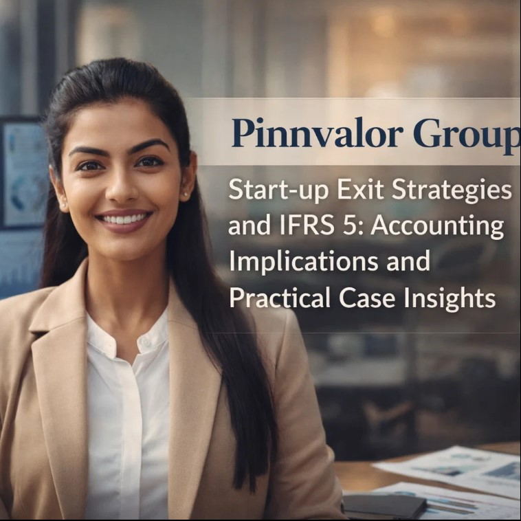

Start-up Exit Strategies and IFRS 5: Accounting Implications and Practical Case Insights
In today’s dynamic business environment, start-ups are constantly exploring exit opportunities—whether through IPOs, strategic sales, or mergers and acquisitions. Each exit option carries its own strategic, financial, and accounting implications, and for companies reporting under IFRS, understanding the requirements of IFRS 5 – Non-current Assets Held for Sale and Discontinued Operations is crucial. This blog dives into how start-up exits interact with IFRS 5, practical accounting considerations, and real-world case insights.
“Can IFRS 5 compliance unlock better valuation during start-up exits?”
Understanding IFRS 5 is crucial for any start-up planning an exit. From IPOs to strategic sales, proper accounting transforms one-off gains into investor trust. Transparency and early planning are the keys to success.
1. Understanding Start-up Exit Strategies
Start-ups typically consider multiple exit options to maximize shareholder value:
- Initial Public Offering (IPO): The start-up goes public, providing liquidity to founders, employees, and investors.
- Strategic Sale: Selling to another company, often to achieve synergies or market expansion.
- Merger or Acquisition (M&A): Combining with or being acquired by another business.
- Secondary Sale or Buyout: Existing investors sell shares to new investors or private equity.
Each exit strategy impacts the timing of recognition, measurement of assets, and reporting of gains or losses, which is where IFRS 5 becomes highly relevant.
2. IFRS 5 Overview
IFRS 5 deals with the accounting treatment of non-current assets that are held for sale and discontinued operations. Key points include:
- Assets must be available for immediate sale and the sale should be highly probable.
- Assets held for sale are measured at lower of carrying amount and fair value less costs to sell (FVLC).
- Depreciation ceases once the asset is classified as held for sale.
- Gains or losses from these assets are recognized in the profit or loss statement, not in other comprehensive income.
For start-ups, IFRS 5 often applies to:
- Equity investments in subsidiaries being sold as part of a strategic exit.
- Divestment of business units after mergers or acquisitions.
- Assets related to discontinued operations during an exit process.
3. Accounting Implications for Start-up Exits
When a start-up plans an exit, IFRS 5 impacts financial statements in several ways:
a) Classification and Measurement
- Identify the asset or group of assets to be sold.
- Determine if the sale is highly probable within 12 months.
- Measure the lower of carrying amount and fair value less costs to sell.
- Disclose the nature and financial impact in the notes.
b) Discontinued Operations
If a start-up sells a major line of business or a significant subsidiary, IFRS 5 requires presenting these as discontinued operations, separate from ongoing business results. This enhances transparency for investors.
c) Impact on Financial Ratios
- Liquidity ratios may improve post-sale if cash inflow is substantial.
- Profitability ratios may fluctuate due to gains or losses from assets sold.
- Investors often scrutinize these one-off effects during valuation.

4. Practical Case Insights
Here are a few examples of how IFRS 5 interacts with start-up exits:
Case 1: Tech Start-up Acquired by a Large Corporation
- Scenario: A start-up develops AI software and is acquired by a global tech giant.
- Accounting: IFRS 5 classification applies to the start-up’s non-current intangible assets.
- Impact: Assets are remeasured at fair value less costs to sell, and any gains are recorded in P&L.
Case 2: Divestment of a Non-core Product Line
- Scenario: A SaaS start-up sells a legacy product line to streamline operations.
- Accounting: The assets and liabilities of that product line are classified as held for sale.
- Impact: Depreciation stops, and fair value adjustments reflect in financial statements.
Case 3: IPO Exit with Discontinued Business Segments
- Scenario: A start-up goes public while divesting a small subsidiary.
- Accounting: The subsidiary is reported as discontinued operation, separate from continuing business results.
- Impact: Transparency improves investor confidence, showing ongoing core business performance.
5. Key Takeaways for Start-ups and Investors
- Early Planning: Understanding IFRS 5 at the planning stage helps avoid last-minute accounting surprises.
- Transparent Disclosure: Clear notes about assets held for sale and discontinued operations are critical for investor trust.
- Valuation Implications: Fair value adjustments and discontinued operations may affect exit valuation.
- Consultation with Auditors: Early engagement ensures IFRS compliance during the exit process.
Conclusion
Start-up exits are more than just strategic decisions—they have significant accounting and reporting implications. IFRS 5 provides a clear framework to classify, measure, and disclose assets held for sale, ensuring that investors and stakeholders receive transparent financial information. By integrating exit strategy planning with IFRS compliance, start-ups can maximize value while staying aligned with global accounting standards.
Suggested LinkedIn Caption
When Start-ups Exit: IFRS 5 Insights That Every Founder Should Know
- Understanding asset classification under IFRS 5.
- Recognizing the impact of discontinued operations on financial statements.
- Practical case insights from tech and SaaS start-up exits.